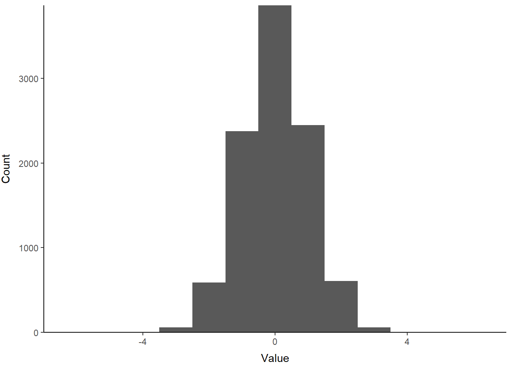
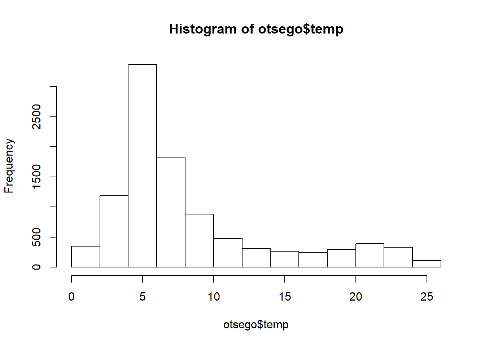
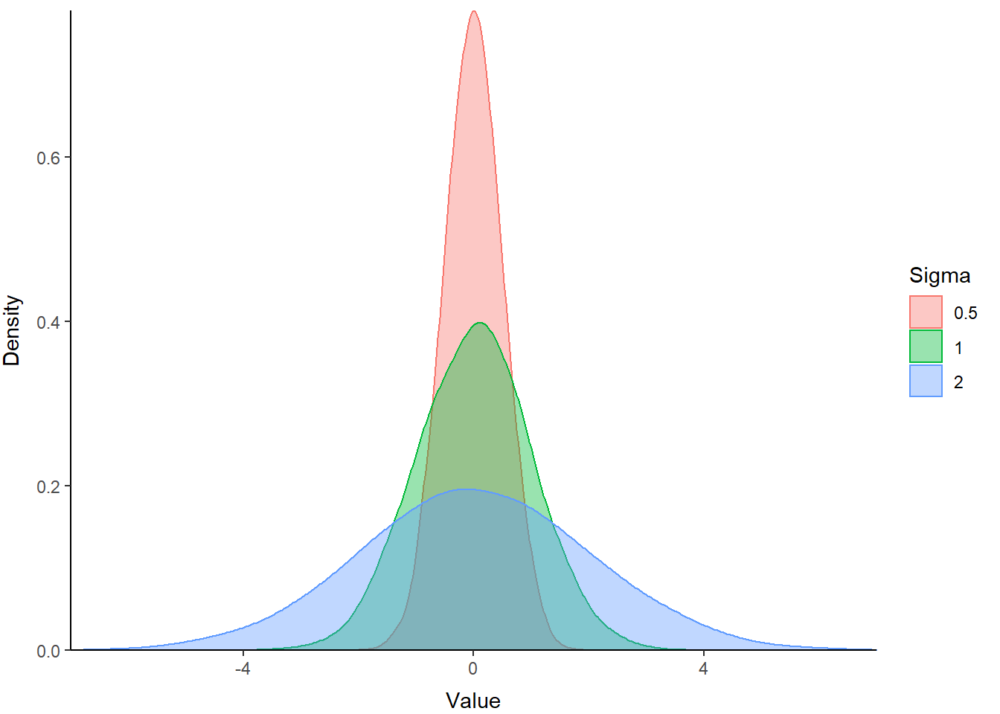
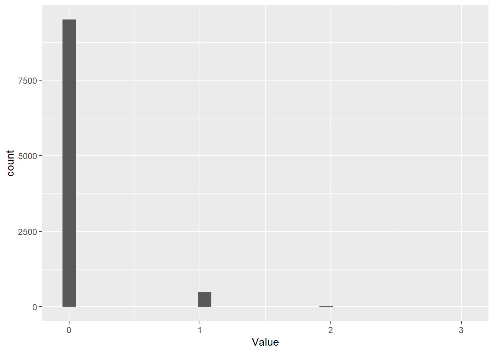

5.4 Continuous distributions
The normal distribution
This is one distribution with which most of you have at least some nodding acquaintance. It is the classic “bell curve” that college students once dreaded in upper-level courses. I don’t know if it’s a thing anymore. Go Google it.
The normal distribution is defined by two parameters:
The mean (\(\mu\))
The variance (\(\sigma^2\))
Let’s take a look at what the normal distribution looks like. We’ll start with a special one called the standard normal (or z) distribution. The standard normal is a normal distribution with a mean of zero and a variance of 1. This one is really cool because the standard deviation (\(\sigma\)) is the square-root of the variance, and in this special case \(\sqrt{1} = 1\), so the variance and standard deviation are equal! And because of this property, and other normal distribution can be converted to a standard normal using z-standardization, which we’ll talk about later. How exciting is that?
First, take a sample from a normal distribution:
samp <- rnorm(n = 10000, mean = 0, sd = 1)Now, plot a histogram using the sick new skills you got in Chapter 4
p <- ggplot() +
geom_histogram(aes(samp), binwidth = 1) +
scale_x_continuous(limits=c(-7,7), expand = c(0, 0)) +
scale_y_continuous(expand = c(0, 1)) +
xlab("Value") +
ylab("Count") +
theme_classic() +
theme(
axis.title.x = element_text(vjust = -1),
axis.title.y = element_text(vjust = 3),
panel.grid = element_blank()
)
print(p)
Pretty!
Because this sample is from a continuous distribution, we might actually wish to represent this distribution with a probability density function. You can think of this as R calculating the relative probability of an given value. It implies a continuous surface, rather than the discrete bins like the histogram. In reality it doesn’t matter because at best we chop continuous distributions into tiny little bins when we do things like integrals, and R bases binwidth in histograms off a density function anyway (aaaaah!).
Density plots are a new one for us, so let’s try them out. If you scroll back and forth, you’ll notice that the code below is basically identical to the histogram above except for labels and scales. We just replaced the histogram geometry (geom_histogram) with a density-based geometry (geom_density). Here, we use fill = 1 to trick R into filling the area under the line because we have no grouping variables. By default, this is interpreted as 'black', so we add an alpha channel for transparency.
p <- ggplot() +
geom_density(aes(samp), alpha = .1, fill = 1) +
scale_x_continuous(limits = c(-7,7), expand = c(0, 0)) +
scale_y_continuous(expand = c(0, 0)) +
xlab("Value") +
ylab("Density") +
theme_classic() +
theme(
axis.title.x = element_text(vjust = -1),
axis.title.y = element_text(vjust = 3),
panel.grid = element_blank()
)
print(p)
Excellent use of ggplot() to make a figure that looks like the clunky base graphics. Maybe you can improve on it in the homework assignment?
We can change the parameters of the standard normal to change both the location and the scale of our distribution. The influence of changing the mean, or average, on the location of a distribution is perhaps obvious. But, the influence of variance may be less intuitive, so let’s have a look!
Create two more random samples, one with a larger sd and one with a smaller sd, to see how this changes the shape of the distribution:
samp2 <- rnorm(n = 1e4, mean = 0, sd = 2)
samp3 <- rnorm(n = 1e4, mean = 0, sd = .5)Let’s put them in a data frame with samp so they’re easy to plot. We combine all three random samples into one column called Value. Then, we create a column to hold the standard deviation used in each sample (Sigma). If we make that one into a factor, we can use the Sigma columns to plot the samples as separate lines by tweaking our plotting code.
normals <- data.frame(
Value = c(samp, samp2, samp3),
Sigma = factor(
c(
rep(1, length(samp)),
rep(2, length(samp2)),
rep(.5, length(samp3))
)
)
)Next, we can just add these to the plot to compare the sampling distributions. This time, we tell R to fill the area under our lines based on sample ID with a default color scheme by saying fill = Sigma in our ggplot() call. We also added color = Sigma to make the lines the same default colors. Remember, you can specify your own.
p <- ggplot(data = normals,
aes(x = Value, group = Sigma, fill = Sigma, color = Sigma)) +
geom_density(adjust = 1.5, alpha = .4) +
scale_x_continuous(limits = c(-7, 7), expand = c(0, 0)) +
scale_y_continuous(expand = c(0, 0)) +
xlab("Value") +
ylab("Density") +
theme_classic() +
theme(
axis.title.x = element_text(vjust = -1),
axis.title.y = element_text(vjust = 3),
panel.grid = element_blank()
)
print(p)
The blue polygon in the plot above shows a distribution with greater variance than our z distribution (green). The red polygon shows a distribution with a smaller variance. Hopefully this helps demonstrate how variance influences the scale of the distribution.
5.4.1 The lognormal distribution
The lognormal distribution is a probability distribution that assumes our random variable is normally distributed on the log scale. This assumption allows us to incorporate skew into the normal distribution and change the location and scale of the normal distribution by transforming the parameters (\(\mu\) and \(\sigma\)) onto the log scale. This is one of the more common data transformations that you will run into, e.g.: “We log-transformed the data to achieve normality….” One of the other reasons for that is that all values (positive or negative) transformed from the log to the real scale are positive, so it helps prevent us from making negative predictions about phenomena or variables that can’t be less than zero.
Let’s take a look at how changes to the mean change the location of this distribution:
# Create random samples from log-normal
# distributions with different means
samp1 <- rlnorm(n=1e4, mean=0, sd=1)
samp2 <- rlnorm(n=1e4, mean=1, sd=1)
samp3 <- rlnorm(n=1e4, mean=2, sd=1)
# Put them in a data frame with the values
# of the means used to create them
lognormals <- data.frame(
Value = c(samp, samp2, samp3),
X_bar = factor(
c(
rep(0, length(samp)),
rep(1, length(samp2)),
rep(2, length(samp3))
)
)
)Now you can plot these using the code above with a couple of modifications to show how the mean of the log-normal distribution influences the location.
p <- ggplot(data = lognormals,
aes(x = Value, group = X_bar, fill = X_bar, color = X_bar)) +
geom_density(adjust = 1.5, alpha = .4) +
scale_x_continuous(limits =c(0, 50), expand = c(0, 0)) +
scale_y_continuous(expand = c(0, 0)) +
xlab("Value") +
ylab("Density") +
theme_classic() +
theme(
axis.title.x = element_text(vjust = -1),
axis.title.y = element_text(vjust = 3),
panel.grid = element_blank()
)
print(p)
You can see that the relative scale of these three distributions is similar, but the location shifts to the right on our x-axis as the value of X_bar (the mean) increases. Note also how this affects kurtosis.
5.4.2 The beta distribution
The beta distribution is a probability distribution that is constrained to the interval [0, 1]. But, it is incredibly flexible in its parameterization, and as a result is very useful for stochastic simulation of variables on the probability scale, such as survival.
The parameters of the beta distribution are \(\alpha\) and \(\beta\), or commonly a and b or shape 1 and shape 2 in R. Within this distribution, \(\alpha\) pushes the distribution to the right (toward 1), and \(\beta\) pushes the distribution back toward the left (toward 0). The relative magnitude of \(\alpha\) and \(\beta\) determine the location, shape, and scale of the probability distribution for our random variable. When \(\alpha\) and \(\beta\) are equal, and greater than 1, the beta distribution looks like a normal distribution within the interval [0, 1].
Let’s take a look:
# Simulate random values from 3 different beta distributions
# so we can compare them
samp1 <- rbeta(n=1e4, shape1=50, shape2=50)
samp2 <- rbeta(n=1e4, shape1=50, shape2=100)
samp3 <- rbeta(n=1e4, shape1=500, shape2=250)
# Put them in a data frame with the values
# of the means used to create them. I am
# using "theta" because often that is how we
# refer collectively to a group of parameters
betas <- data.frame(
Value = c(samp, samp2, samp3),
theta = factor(
c(
rep('a = 50, b = 50', length(samp)),
rep('a = 50, b = 100', length(samp2)),
rep('a = 500, b = 250', length(samp3))
)
)
)And then, we can plot them just like we did above. Copy and paste it - change what you need. Isn’t code great?. Just don’t forget to change the scale and the data in the plotting code!
p <- ggplot(data = betas,
aes(x = Value, group = theta, fill = theta, color = theta)) +
geom_density(adjust = 1.5, alpha = .4) +
scale_x_continuous(limits =c(0, 1), expand = c(0, 0)) +
scale_y_continuous(expand = c(0, 0)) +
xlab("Value") +
ylab("Density") +
theme_classic() +
theme(
axis.title.x = element_text(vjust = -1),
axis.title.y = element_text(vjust = 3),
panel.grid = element_blank()
)
print(p)
Play around with these to see what kind of cool shapes you can make and where they are located within the range between zero and one.